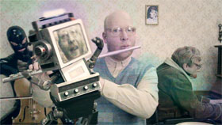

MeTube: August sings Carmen "Habanera"

Daniel Moshel – Österreich 2013 – 4 Min.
In a combination of dance club and SM dungeon the director, Daniel Moshel, stages a minutely choreographed trip into the subconscious: While “Habanera” booms in Schram’s magnificent techno remix, genders and realities collide and overlap, and suppressed emotions noisily forge ahead. MeTube is more than a music video: It´s an homage, critique and pointed love letter to the Web and its users in a whirl of exhibition(ism). I create a world the way I like it. Ephemeral but still for eternity. – Sebastian Höglinger
Wednesday 15/10 8:30 p.m. Werkstattkino
Daniel Moshel, born in 1976 in Offenbach / Main, Germany. Studies of Multimedia in Salzburg. In 2003 he founded his film production company Moshel Film.